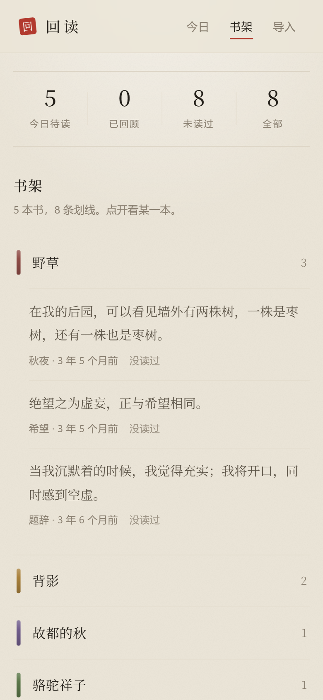

点「记住了」或「再来」试试
三步，全部在你自己的电脑上
微信读书 App 没有「导出全部笔记」这个功能，所以做了一个书签来代替。它不是插件，不用安装，只在微信读书的网页上运行。
-
一
取回划线
打开卷中故人的导入页，把「取回我的划线」拖到浏览器书签栏。到
weread.qq.com登录后点一下它，会下载一个 json 文件。 -
二
拖进来
把那个文件拖进卷中故人。它读完就存在浏览器里，不会发到任何地方。重复导入不会丢掉你的回顾进度。
-
三
每天五页
看完点「记住了」或「再来」。记住了的三天后再见，再来的明天见。今天的五页翻完，就到此为止。
它在意的几处小事
一页纸上能做的，都做了。下面每一样都是应用里真实的样子，不是画出来的。
三年前的今天·第三次见
日期不是数字
它说「三年十个月前」，不说 2022-11-08。恰好同月同日的那天，它会说「三年前的今天」。让人停一下的往往就是这一行。
那年冬天读的，没读懂，先划下来。
你的话是手写的
书里的字是印的，你当时写的想法用楷体写在页边，像一条旁批。默认收着，点开才看。
野骆背
每本书一枚章
取书名的第一个字，盖在页眉。翻到哪本书，一眼就知道。
书布色
每本书按名字分到一种布色，十种里挑的，都压得住，不撞色也不刺眼。
其实地上本没有路，走的人多了，也便成了路。记
先盖章，再翻页
点「记住了」盖一枚「记」，点「再来」盖一枚「再」，然后这一页翻过去。还剩几页，就叠在下面。
它不做的事
这个项目没有服务器。下面每一条都不是「暂时没做」，是不打算做。
- 不做账号
- 打开就能用。没有注册，没有登录，也没有人知道你在读什么。
- 不做云同步
- 划线只存在这台设备的浏览器里。换设备就再导一次，文件还在你手上。
- 不做 AI 生成
- 它不总结，不解读，不替你写。回来的每一个字都是你自己划过、写过的。
- 不做社交
- 没有关注，没有点赞，没有排行。这是你一个人和过去的自己之间的事。
加到主屏幕，断网也能读
它是一个网页，但可以像应用一样装在手机上。装完全屏，没有浏览器边框，在地铁里没信号也照样能翻。


先说清楚它的短处
取数走的是微信读书网页端的非官方接口。人家一改，书签就会失效。这是这条路最大的风险，GitHub 上现有的几个导出工具走的是同一条路，同样脆弱。
网页端拿不到纯划线，只拿得到「划线加想法」的配对。也就是说，你只划了线没写字的那些，暂时进不来。
Kindle 和 Cubox 还没做。手上没有真实样本，不想凭文档猜着写解析器。如果你愿意提供一份自己的，我来写。